Врачи сообщили, кому грозит паралич лицевого нерва после вакцинации
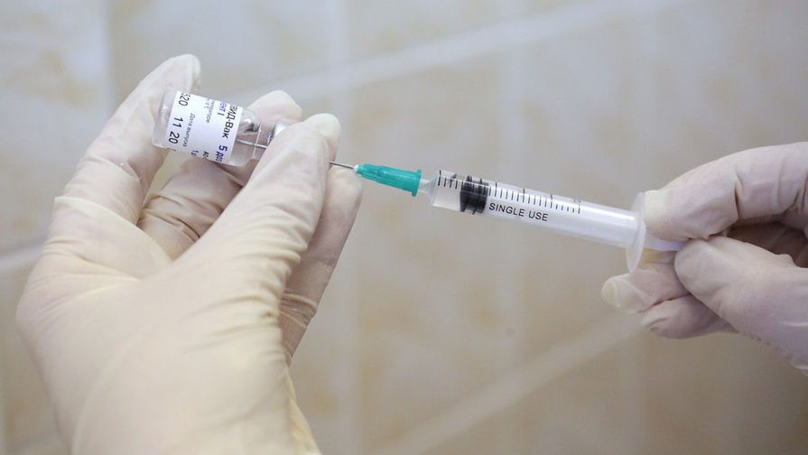
Одним из наиболее серьезных последствий вакцинации от коронавируса может стать паралич лицевого нерва — такое последствие уже обнаружили у себя некоторые пациенты, получившие первую дозу препарата Pfizer.Врачи пояснили, что подобная реакция организма относится к аллергическим.Она может возникнуть у разных групп пациентов и требует строгого медицинского контроля во избежание искажения черт лица в будущем.
После вакцинации от коронавируса есть вероятность заработать паралич лицевого нерва – частичное онемение мышц, которое впоследствии приводит к перекосу лица.Такие последствия вакцины уже зафиксировали у 13 жителей Израиля, получивших первую дозу препарата Pfizer, сообщали в Минздраве страны.
Отдельные случаи были установлены и в других странах, сообщила профессор Школы системной биологии Университета Джорджа Мейсона Анча Баранова.
«Парез лицевого нерва, кстати, отмечался не только в Израиле, были случаи и в Канаде, и в США.Да, они связаны с вакцинацией.Надо сказать, что это неприятный для человека эффект, ...> он проходит.Конечно, может быть, не так быстро, но в принципе на таком же горизонте, как, скажем, тик глаза», — заявил медик, выступая на Первом канале.
Как пояснил «Газете.Ru» невролог, руководитель реабилитационного центра «Преодоление» Александр Комаров, аллергенный потенциал имеет каждая вакцина – именно он вызывает реакцию организма на введение антигена, которая может проявиться в том числе в виде паралича лицевого нерва.
«Есть люди, которые подвержены таким реакциям: у них гиперчувствительность или напряженный иммунитет, который может спровоцировать избыточную реакцию в виде аллергии, отека Квинке, высыпаний.У людей с аутоиммунными заболеваниями могут проявиться тяжелые последствий.Например, невропатия лицевого нерва, которая появилась у некоторых вакцинированных – это именно аллергическое аутоиммунное повреждение лицевого нерва.Напрямую связи вакцины с лицевым нервом нет – это реакция через иммунитет», — заявил врач.
Подобная реакция организма может возникнуть также при введении антибиотика или другого препарата, подчеркнул невролог.По словам профессора Анчи Барановой, повлиять на это могут и обычные медицинские процедуры.
«Такие эффекты наблюдаются не только после вакцинации, скажем так, Pfizer или Moderna, но и после других медицинских процедур.Люди могут прийти сделать фиброгастроскопию по поводу гастрита и также получить паралич лицевого нерва», — отмечала она.
При этом считать себя защищенным от такого последствия вакцинации не может ни один пациент, считает невролог Алексей Кудряшов.По его словам, подобные проявления могут быть связаны с серьезными заболеваниями, разобраться с которыми поможет только врач:
«Клинических признаков поражения лицевого нерва нет – это анатомическая особенность, которую можно спрогнозировать только после специализированного обследования.Существует несколько типов поражения лицевого нерва – это центральное и периферическое.Центральное происходит при поражении центральной нервной системы – инсульте, инфаркте, например.В случае с вакциной происходит периферическое поражение, оно чаще всего связано с переохлаждением или другими серьезными заболеваниями лица и шеи».
Первым симптомом паралича лицевого нерва считается боль за ухом, предупреждают врачи.После нее наступает слабость лицевых мышц — этот симптом проявляется в течении нескольких часов, а затем нарастает в течение 48–72 часов.При этом поражение распространяется только на половину лица.
«Парез лицевого нерва – это такая же ситуация, как инсульт и аппендицит.В таких случаях нужно получать срочную медицинскую помощь.Почему это важно: нерв, который проходит в лицевом канале, очень нежный.Если больше пяти часов он будет находиться в аллергическом отеке, повреждения могут быть очень серьезные.Например, нарушится функция лицевой мускулатуры, что приведет к перекосу лица, что впоследствии навредит уже психологически», — подчеркнул Александр Комаров.
При обращениях пациентов с такой проблемой врачи обычно используют кортикостероиды — при введении в первые же часы после проявления паралича они уменьшают отек нерва и помогают людям восстановить движение мышц лица немного быстрее, пояснила «Газете.Ru» инфекционист Лилия Баранова.
«Отмечу, что в таком случае независимо от того, проводится ли специализированное лечение, большинство пациентов сами справляются с проблемой в течении нескольких дней или месяцев, в зависимости от возможностей организма», — заключила врач.
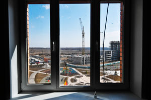
Posted On: 2021-01-20T14:37:00
Posted By: Александра Баландина
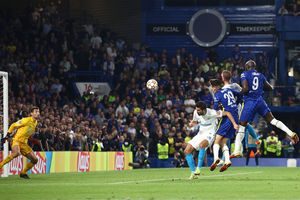
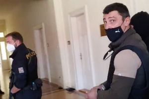
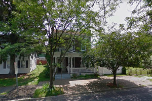
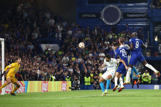
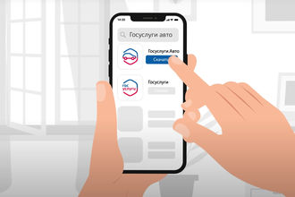
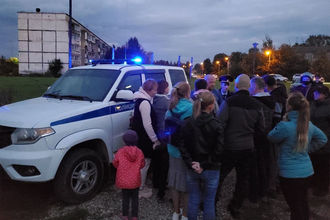
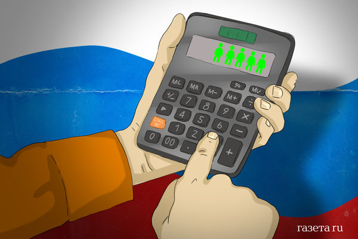
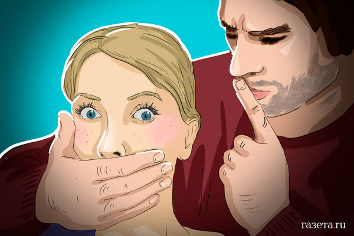
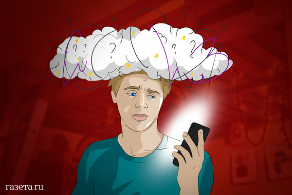
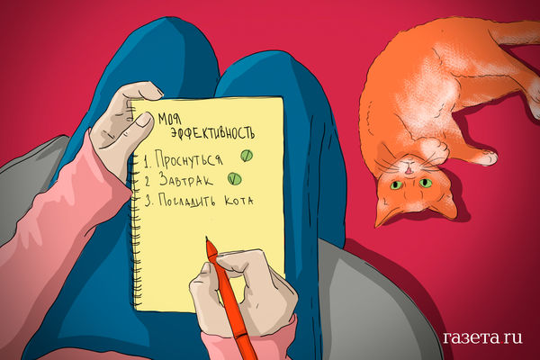
Content Date: 2021-01-20
Download Date: 2021-09-16
Document ID: L0C04G8WA